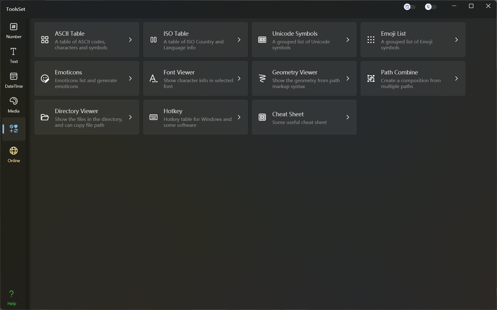

ToolsSet 其他类
介绍
功能包括：ASCII Table、ISO Table、Unicode Symbols、Emoji List、Emoticons、Font Viewer、Geometry Viewer、Directory Viewer、Hotkey、Cheat Sheet

功能列表
ASCII Table ASCII码表
- 查看ASCII控制字符
- 查看ASCII可打印字符
- 查看ASCII扩展字符
- 包含十六进制、八进制、十进制代码和符号、HTML编码
ISO Table ISO列表
- 查看ISO国家代码
- 国家的英文名称、中文名称、域名
- GECCode、两位代码、三位代码、ISO、编号
- 货币名称、货币代码
- 查看ISO语言代码
- 语言的英文名称、中文名称
- ISO代码、本地语言的名称
Unicode Symbols Unicode符号表
- 按分类查看Unicode字符
- 按名称或编码搜索Unicode类别
- 按指定字体显示字符
- 常用分类字符查看
Emoji List Emoji列表
- 按分类查看Emoji
- 按名称检索Emoji
Emoticons 颜文字
- 按类别查看颜文字
- 按指定部位生成颜文字
- 指定部位字符
- 使用随机字符
- 编辑颜文字
Font Viewer 字体查看器
- 指定字体
- 分页跳转
- 查看内容包括：字符、十进制编码、十六进制编码、XML/CSS/JS用法、Geometry代码
Geometry Viewer 几何路径查看器
- 代码转换为路径查看
- 可选择是否填充路径
Directory Viewer 目录预览
- 查看本地文件目录
- 复制文件夹路径
- 复制文件名称
- 指定路径跳转
Hotkey 常用快捷键表
- 包含Windows、Excel、Word、Visual Studio、Visual Studio Code、IntelliJ IDEA，JetBrains Rider、Photoshop、Illustrator、AutoCAD的快捷键
Cheat Sheet 速查表
- 包含Python Func、Vim Command、Linux Command、Http Status、CAD Command、Regex、Morse Code、XPath、Windows CMD等